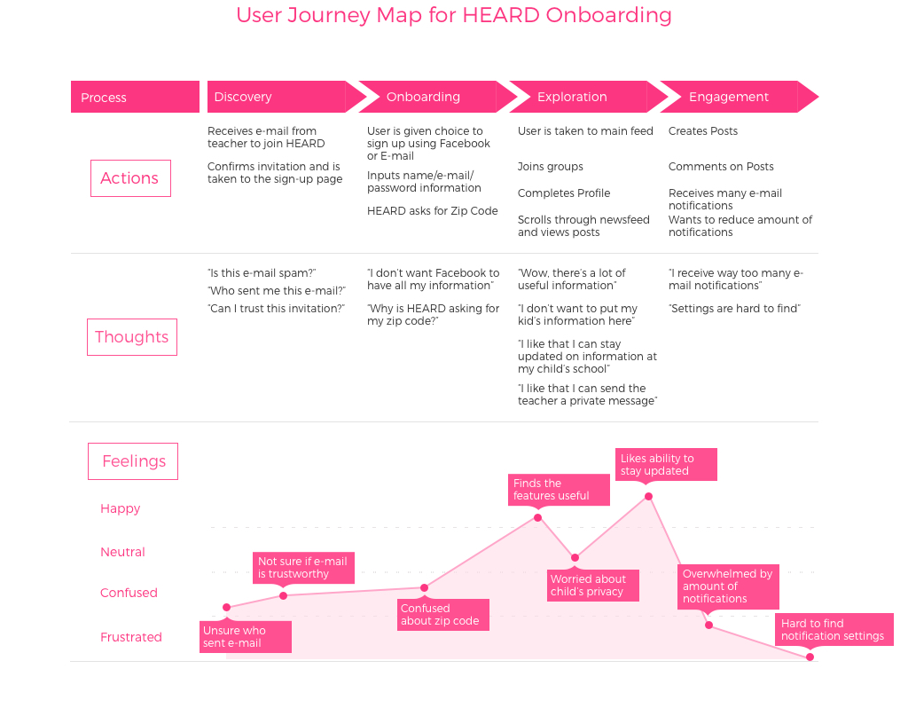

Heard is an app centered around school communication, used by parents, teachers and administrators to keep each other updated about school related issues and events.
The Challenge
How can we design an onboarding experience that aligns with both user and business goals, while also accounting for existing and non-exisiting users on both ios and desktop platforms?
My Role
Working in a team with six other UX designers, I was involved in the end to end process of the onboarding experience and was the team lead for visual design. I introduced the red route analysis tool to the team as well as the user journey map.
Skills
User Research | Usability Testing | Personas | Wireframing | Card Sorting | Task Flow | Prototyping | Vector Illustrations | Lo/Hi-Fidelity Design | Sketch
In order to create a seamless onboarding experience, it was important for us to focus heavily on research and understand pain points surrounding the current app. We conducted user interviews with parents and teachers, created personas, affinity and journey maps, and used the Jobs to be Done framework as part of our research process.

Through usability testing and interviews, we were able to discover common themes amongst new users of HEARD:
Current users of the app also complained that:
Using comments and information we received from the interviews, I created this journey map to illustrate the emotions that the user would feel during the current onboarding process of the HEARD app. This allowed us to visually see opportunities for improvement.
Main takeaways from this journey map was that we needed to build trust and make sure users understood the unique value proposition early on. Also, privacy and amount of notifications were a point of frustration for many users.
With the information gathered from our research, we had a better sense of what concerns parents had when using HEARD. With this in mind, we created a set of design principles to adhere to for the rest of our decision making process.
To figure out which aspects of the app we should focus on and highlight during the onboarding process, we used the "Red Route Analysis" tool. We created a list of tasks and sorted them by asking two questions:
Through this analysis, we determined that the main priorities to focus on would be the actions that fell on the two right columns of the chart.
After consolidating our research information, we began to sketch out ideas using wireframes while keeping in mind the design principles that we had established.
We wanted to create an onboarding process that highlighted the unique value proposition early on so that parents understood the importance of using HEARD. We also determined that the minimum pieces of information (other than the signup info) needed in order to get the best experience out of HEARD included:
In keeping with our design principles, we felt it was important to explain the benefit of giving the information while also assuring the user that their privacy would be respected.
After our first round of usability testing with the lo-fi prototype, we uncovered several areas that needed to be improved.
We are currently in our second iterations of lo-fi validation.